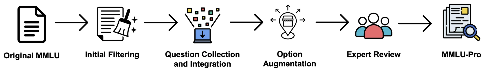
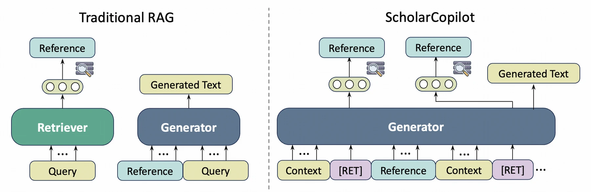
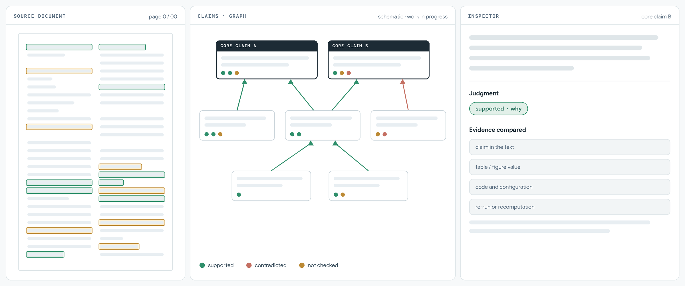

Grounded
Its sources can be checked: a reader can look up the sources behind each statement.
PhD Comprehensive II · Research proposal · 26 Nov 2026
David R. Cheriton School of Computer Science, University of Waterloo
What would it take to trust research done by AI? This talk is my research proposal. It asks the question in a narrow sense: can another researcher check the work? Five questions lead there, from a capable model to output we can check.
The threadA capable model
Output we can check
The thread
In 2025 an AI-written paper passed workshop peer review at ICLR. The system's own team read the code: by their estimate, about 57% of the test set overlapped with the training set. The published reviews never mention it. No reader could tell from the PDF.
The paper may still be right; it was withdrawn before publication, by prior agreement. Source: The AI Scientist-v2 (Yamada et al., arXiv 2504.08066), Figure 3 and Appendix C.1.2.
By trust I mean something narrow: another researcher can check the work. The title names three conditions.
Its sources can be checked: a reader can look up the sources behind each statement.
Its experiments re-run: someone else can run them again and get compatible numbers.
Its claims trace to evidence: a claim can be followed back to what was run and measured.
None of the three makes the science valid. They make it checkable.
The proposal joins the three conditions in one sentence. The setting is computational machine learning: research whose evidence is code, data and numbers.
Autonomous research becomes more assessable, and potentially more effective, when evidence linking claims to sources and experiments is preserved during execution and audit findings guide subsequent actions.
If a system keeps the evidence that links each claim to its sources and experiments, other people can assess its research. If audit findings also guide what the system does next, the research itself may improve. That second half is a hypothesis: it still needs a direct test.
The first two questions are about the model. The last three are about its output: the three words of the title.
A capable model
Output we can check: grounded, reproducible, auditable
RoadmapThis order is hindsight: the works were not planned as a chain, but each one left a gap that the next one addresses. Completed work takes a first step on each of the first four questions; grounding and reproduction are tested so far on human-written papers. The fifth is work in progress.
01 · MeasureCan we measure what the model can really do?
A research agent runs on a language model, so the thread starts with the model. By 2024 the standard exam, MMLU, could no longer tell the best models apart. MMLU-Pro made the exam harder to guess, then tested the exam itself.
As of May 2024, GPT-4o scored 88.7% on MMLU, Claude-3-Opus 86.8% and GPT-4-Turbo 86.5%. A two-point gap is smaller than what rewording the prompt does to an MMLU score, for the small models we tested. The exam could no longer tell these models apart.
Questions that small models already answer are removed. College-level problems that need several reasoning steps are added. Each question gets more answer options, so a lucky guess rarely works. Human experts review the items in two rounds.

Every model scores lower on MMLU-Pro, so the new exam is harder. The gap between the same three models is about four times as wide, and the best model of that time still missed more than a quarter of the questions.
Accuracy (%). Outlined bars: MMLU. Filled bars: MMLU-Pro.
MMLU-Pro, Figure 4 and Table 2.
The prompt test covers six small open models (7B to 8B), not the frontier models above.
In 2024, MMLU-Pro separated the best models again. Two years later its top is compressing too. What lasts is the habit: before trusting a score, test the measurement itself. Carried forward: robust evaluation.
For a random sample of GPT-4o's wrong answers, experts labelled the cause. 39% are faulty reasoning; missing knowledge is a close second at 35%. In the example below the key says H. The model reasons step by step, and then answers B.
MMLU-Pro question · Engineering
Minimum force on a piston that makes the water boil
Shares are of 120 analysed GPT-4o errors; the remaining errors fall into other groups. A benchmark can show where a model fails. It cannot fix it.
02 · ImproveCan we make it reason better?
We cannot retrain a frontier model, so we ask the question on small open models, and GPT-4o becomes the teacher. Critique Fine-Tuning trains the student to write the teacher's critique of a candidate answer. The gain is measured in solving.
The same question from chapter 01. The answer key can only say that the model was wrong. One sentence from a human annotator gives the reason. That sentence is a critique, and it says much more than the key.
MMLU-Pro question · Engineering
Minimum force on a piston that makes the water boil
Annotator“…the pressure inside and outside the container should be subtracted, not added.”
The input is a question with a candidate answer. The target is the teacher's critique of that answer: it names the mistake and ends with a verdict. So yes, this is distillation. What changes is what we distil: critiques, not answers.
Critique Fine-Tuning (COLM 2025), Appendix A.1. The critique was written by GPT-4o; the student is a small base model.
All three trained models see the same 50K questions, and the last two bars share one teacher. Imitating noisy web answers ends slightly below the base model. Copying the teacher's answers helps. Learning its critiques of the noisy answers helps more: the signal matters, not only the teacher behind it.
Qwen2.5-Math-7B. Grey: no training. Outlined: imitate an answer. Filled: critique the noisy answer.
Critique Fine-Tuning, Table 2.
One-Shot CFT uses a slightly different benchmark set, and 42.2 is the best of four seed problems. Against the baseline as re-evaluated by Hochlehnert et al. (2025), the gain is +10.0 points.
Critique is a stronger training signal than answers. Shown for 7B base models on math. Carried forward: critique as feedback (hypothesis).
Look at where the judgment came from. Every critique came from a model stronger than the student, and a benchmark with an answer key told us that the student improved.
writes every critique
never scored on critiquing
grades the student
Even the teacher makes mistakes: about 1 in 5 of 50 inspected critiques had inaccuracies. With a weaker teacher, the gain is smaller. When the student critiqued its own answers at test time, accuracy went down. So CFT does not give us a critic. It gives us a training signal.
Critique Fine-Tuning (COLM 2025), Sections 3.5 and 4.
03 · GroundIs what it writes tied to real sources?
A reference is a fact outside the model. It has to be looked up. ScholarCopilot is one 7B model that writes and retrieves: when a citation is due, it looks the paper up itself. Its first suggestion is the cited paper 40.1% of the time.
Two things strong models do with the literature. First, GPT-4o writes an introduction about diffusion models, with its own reference list. Then a model with a retriever writes the same introduction.
1GPT-4o's own reference list
@article{saharia2022imagen,
title={Imagen: Text-to-image diffusion models with large pre-trained language models},
…
journal={arXiv preprint arXiv:2205.11487},
year={2022}
}
Real title“Photorealistic Text-to-Image Diffusion Models with Deep Language Understanding”
2Qwen-2.5-72B with retrieval
\section{Introduction}
…architecture of models~\cite{goodfellow2014generative, kingma2013auto}, training methods~\cite{he2016deep}, and strategies for scheduling noise~\cite{vaswani2017attention} .
Cited“Attention Is All You Need” (Vaswani et al., 2017), a famous work on an unrelated method
These are single cases from ScholarCopilot, Appendix A.3. We did not measure how often this happens. Looking things up once, before writing, is not enough.
When a citation is due, the model writes a special marker. Its internal state at that marker is the search query, and the search returns a real paper. Writing continues with that paper in context.

Every suggestion comes from a real corpus, so it exists by construction. What we measure is whether it is the right one. We hide a citation and everything after it. A hit means the first suggestion is the paper the authors cited.
Recall@1 on 1,000 held-out papers, against one dense and one keyword-based retriever. ScholarCopilot, Figure 5.
Back to case 2: in the same clause, ScholarCopilot cites a paper on noise scheduling.
The two baselines are off the shelf: they were not trained on our data and they query with the last sentence before the citation, so part of the gap is in-domain training. The second and third numbers come from a small user study: ten students drafted introductions and related work with it.
Writing can now point at real, retrieved sources. Carried forward: source evidence.
The scope is introductions and related work in computer science. One thing is not checked yet: that the cited paper supports the sentence. That check belongs to the audit, the last chapter.
04 · ReproduceDo its experiments re-run?
Run as released, a paper's code can give a wrong number, and nothing warns you. ReproBridge keeps what one reproduction recovers as a refined artifact. With it, mean success of four coding agents rises from 76.4% to 92.6%.
In one of the 36 papers studied, the release never sorts the 10,000 validation images into their classes. So every image gets one label. Nothing fails; the training simply runs. One coding agent runs the released code, the run finishes, and the loss is far from the paper's.
Validation loss: lower is better, and the target is the paper's value. ReproBridge, Appendix D.5.
One case. Three other agents passed all of this paper's tasks from the released code; this one did not. With the artifact, a script sorts the validation images before training starts, and the same agent, in a fresh session, measures a loss next to the paper's value.
One reproduction already recovers the missing steps, but each fix stays in a chat log or a shell history. ReproBridge keeps them as a reusable artifact the next agent can run, so it does not start from zero. A refined artifact answers four questions.
What code do I run?
How do I prepare the environment?
How do I get the requested number?
Why was each choice made?
Agents build the artifact in three stages, and an independent Reviewer checks every stage.
We sampled ICML 2026 Spotlight papers with code and kept 36. A task is one number from a main table; five human reproducers confirmed 1,029 of them. Four coding agents attempt every task in fresh sessions, with the released code or with the refined artifact. A task passes if its number is compatible and really measured.
Task success on 1,029 tasks from 36 papers. Hollow: released code. Filled: refined artifact. ReproBridge, Table 3.
Results are on human-written papers. Downstream API spending falls by about a fifth, not counting construction, auditing or GPU cost.
In one case, the execution record and the report disagree about the epoch time. The report's value is a projection, written after the run ended. It matched, but it was never measured.
ReproBridge has an execution Auditor, itself an agent, which follows every reported number back to its run. We checked it against two human reviewers. Its flags are mostly right, and it misses about one invalid outcome in five.
Preserved procedures let fresh agents re-run results. Carried forward: execution evidence + an execution Auditor.
The number matches, but does the paper say what the code does? In one paper, the text states one learning rate. The released code uses another, ten times larger.
“Numerical compatibility does not certify scientific validity” ReproBridge, Section 6.3
This case is one of 238 agent-flagged findings touching 669 tasks. Agents produced them and no human validated them, so we cannot tell how many are right. That is the gap.
05 · AuditIn progressDo its claims follow from its evidence?
A result can re-run and still mislead. The ongoing work audits a finished paper together with its released code, claim by claim: does each claim follow from the paper's own evidence? This is work in progress. No audit result is reported on this page.
This is not ReproBridge's execution Auditor: that one checks that a number was measured. This one judges whether a claim follows from its evidence.

Two questions come after the audit itself.
Each claim of a finished paper is checked against its own evidence.
Everything in this chapter is work in progress. No audit result is reported on this page.
Summary
MMLU-Pro and Critique Fine-Tuning are about the model: measuring it, and making it reason better. The other three are the words of the title.
ScholarCopilot: writing that points at real, retrieved sources.
ReproBridge: procedures kept so that results re-run.
Each claim checked against its own evidence.
What would it take to trust research done by AI?
The narrow answer of this talk: another researcher can check the work. The aim of the thesis is that the next AI-written paper carries enough evidence for a reader to tell.
Publications
The papers behind chapters 01 to 04, numbered by chapter. Four are published at peer-reviewed venues, one is an arXiv preprint.
Yubo Wang, Xueguang Ma, Ge Zhang, Yuansheng Ni, Abhranil Chandra, Shiguang Guo, Weiming Ren, Aaran Arulraj, Xuan He, Ziyan Jiang, Tianle Li, Max Ku, Kai Wang, Alex Zhuang, Rongqi Fan, Xiang Yue, Wenhu Chen
Yubo Wang, Xiang Yue, Wenhu Chen
Yubo Wang, Ping Nie, Kai Zou, Lijun Wu, Wenhu Chen
Yubo Wang, Xueguang Ma, Ping Nie, Huaye Zeng, Zhiheng Lyu, Yuxuan Zhang, Benjamin Schneider, Yi Lu, Xiang Yue, Wenhu Chen
Yubo Wang, Rui Meng, Jaehyun Nam, Tomas Pfister, Jinsung Yoon